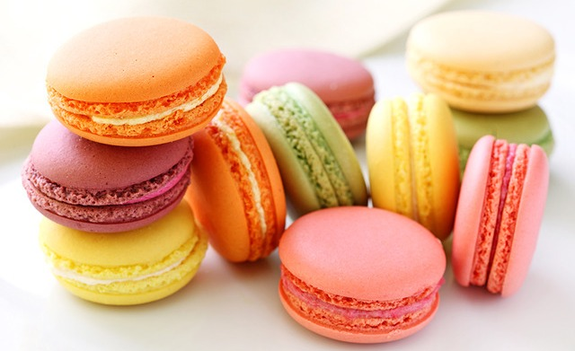

French Macarons

Multi-colored French macarons
Ingredients
Macarons
- 1 3/4 cups powdered sugar
- 1 cup almond flour, finely ground
- 1 tsp salt, divided
- 3 egg whites, room temperature
- 1/4 cup granulated sugar
- 1/2 tsp vanilla extract
- Gel food coloring, your choice of colors
Vanilla Buttercream
- 1 cup unsalted butter, room temperature
- 3 cups powdered sugar
- 1 tsp vanilla extract
- 3 tbsp heavy cream
Directions
- In a food precessor, combine the powdered sugar, almond flour, and 1/2 tsp of salt.
Process on low speed until extra fine. Shift the mixture through a fine-mesh sieve
into a large bowl.
- In a seperate large bowl, beat the egg whites and the remaining 1/2 tsp salt with a hand
hand mixer until soft peaks form. Slowly add the sugar until fully incorporated.
Continue to beat until stiff peaks are formed.
- Add vanilla and food coloring and beat until fully mixed.
- Add 1/3 of sifted flour mixture to mixture and gently fold in with a spatula. Repeat
until all flour is mixed in. Continue to fold slowly until batter falls into ribbons.
- Transfer batter into a piping bag with a round tip.
- Place parchment paper onto a baking sheet and begin piping the macarons in 1 1//2 in
circles, spacing at least 1 in apart.
- Tap the baking sheet into a flat surface 5 times to release any air bubble.
- Preheat oven to 300 degrees fahrenheit
- Let macarons sit at room temperature for about 30 minutes, until dry to the touch
- Bake macarons for 17 minutes.
- Transfer macarons to cooling rack.
- Make the buttercream: In a large bowl, add butter and beat with a mixer for
1 minute. Sift in the powdered sugar and beat until well-mixed. Add vanilla and
beat to combine. Add the cream slowly and beat until desired consistency is reached.
- Transfer buttercream to piping bag with a rounded tip.
- Add a dollop of buttercream to one macaron shell and top is with another to creat a
sandwich